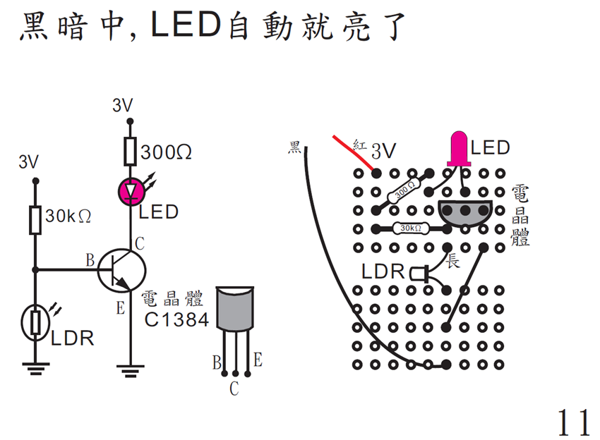
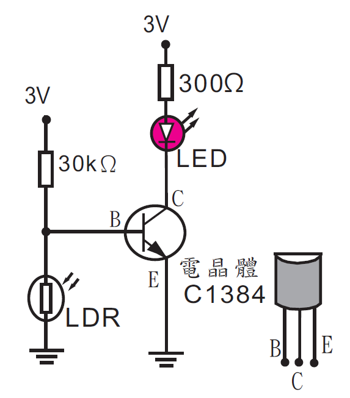
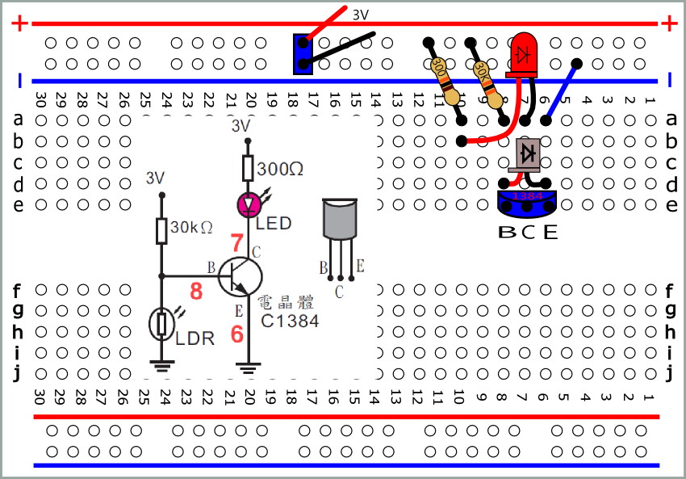
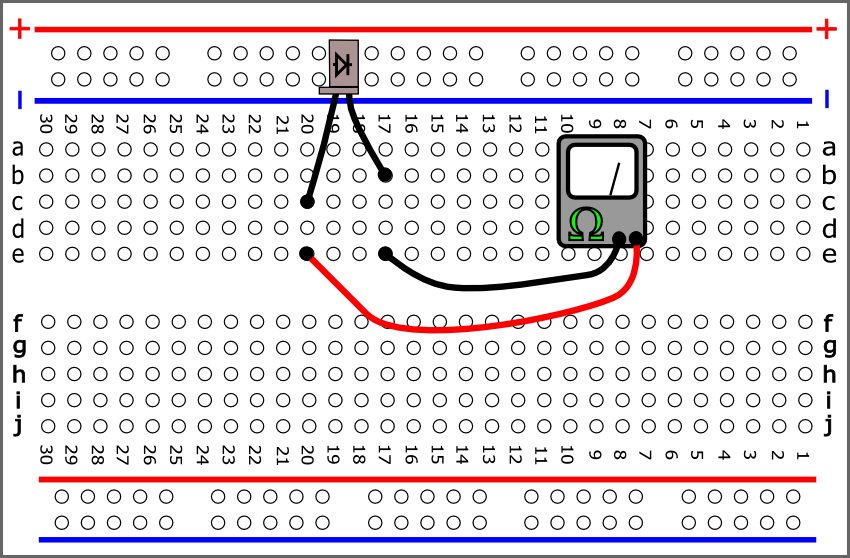
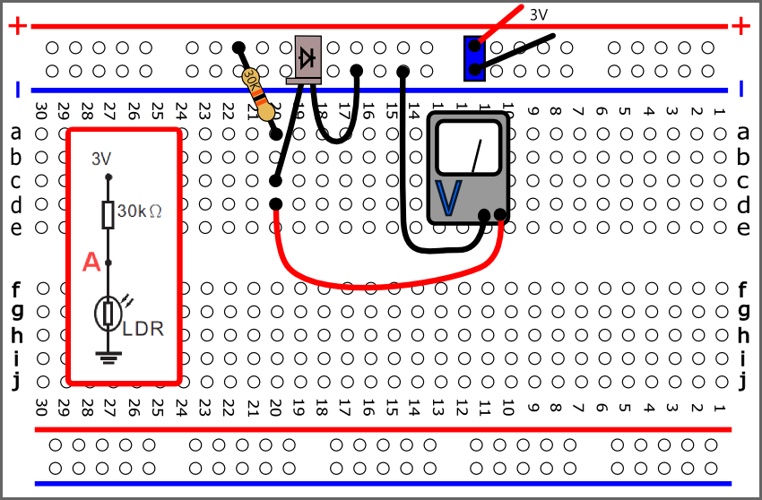
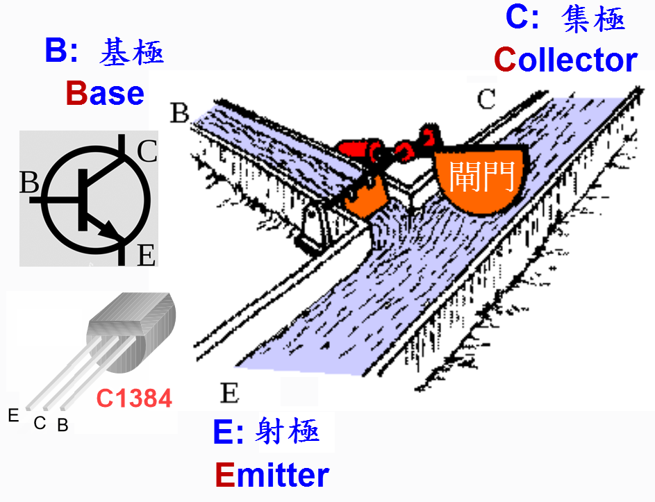
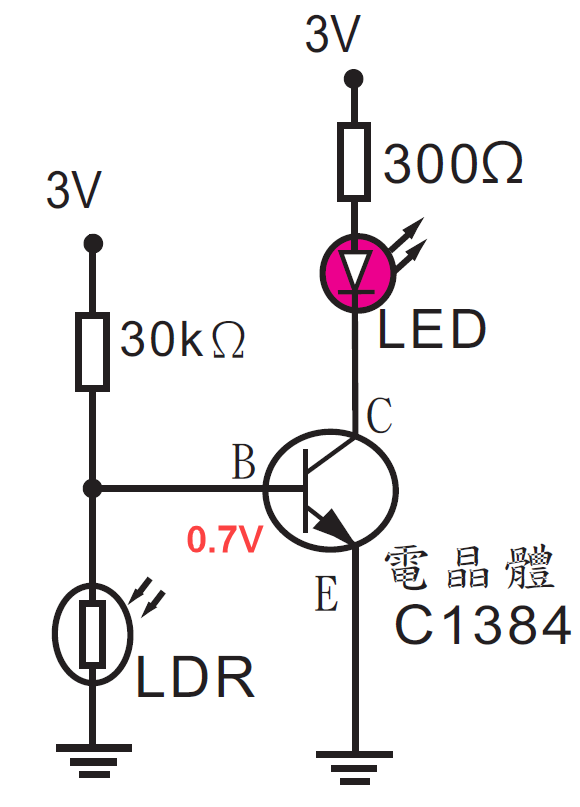

 |
 |
 SVG PDF DEMO SVG |
| 插件原則: 1.先插接腳數多的原件 2.再插較矮的原件 |
| 使用三用電表量測光敏二極體  結論:越亮電阻越小 |
量測A點電壓  pdf svg |
| 結論: 越亮光敏二極體電阻越小 A點電壓越低 |
 |
 B點電壓低於(0.6~0.7V)時， BE不通 CE亦不通 BE通時，B點電壓比E點電壓高(0.6~0.7V) |